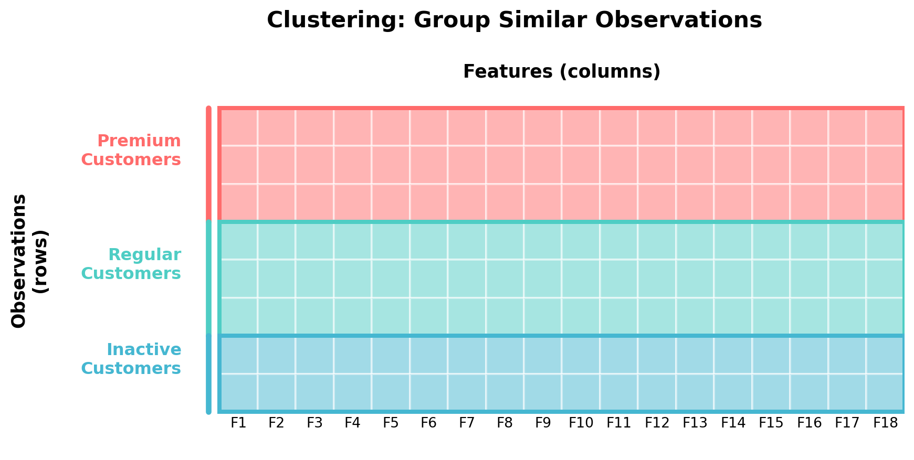
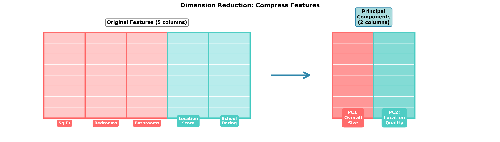
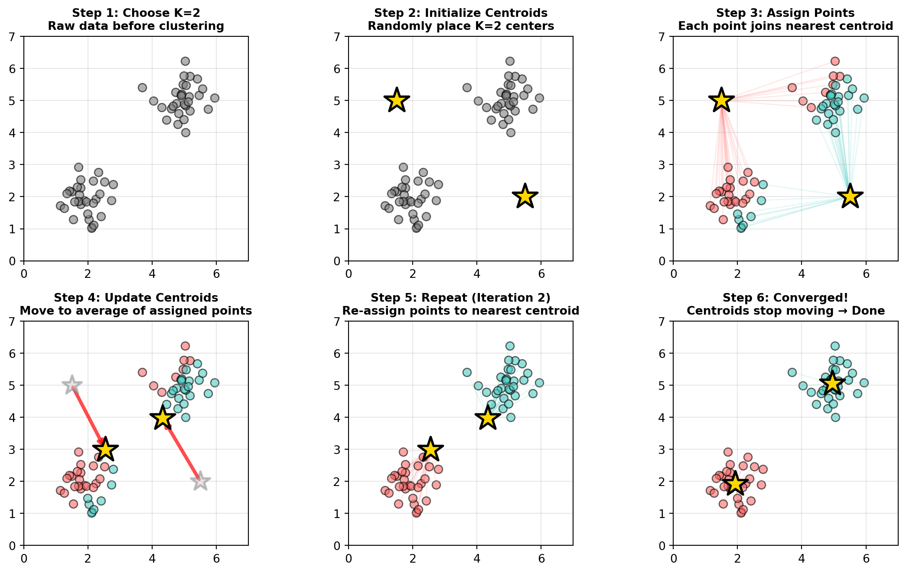
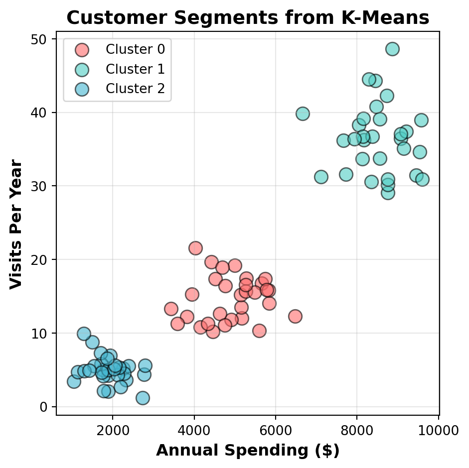
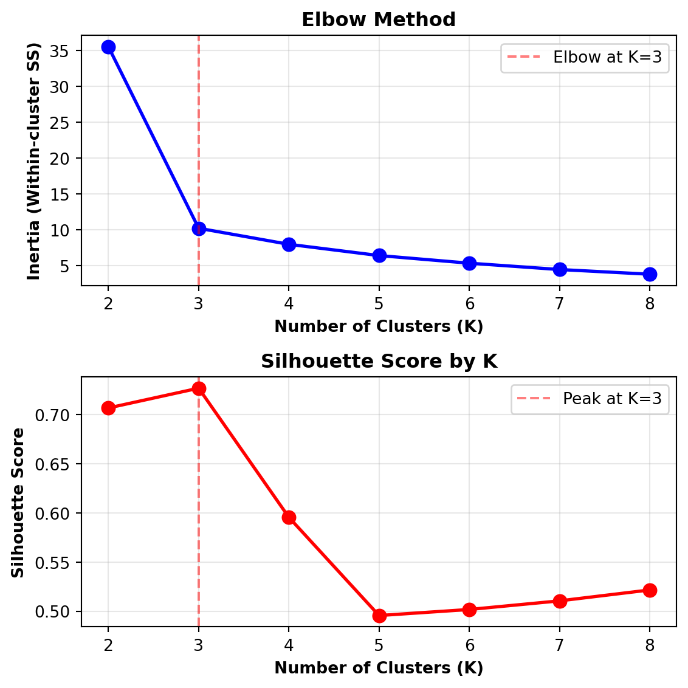
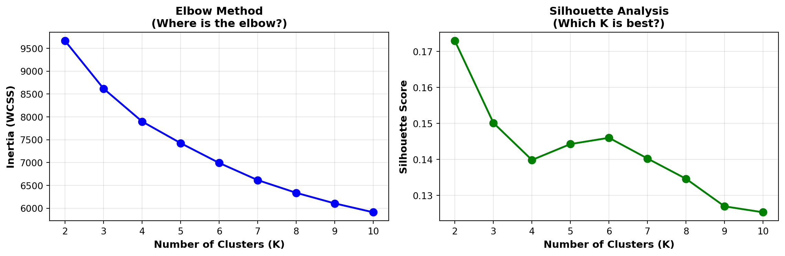
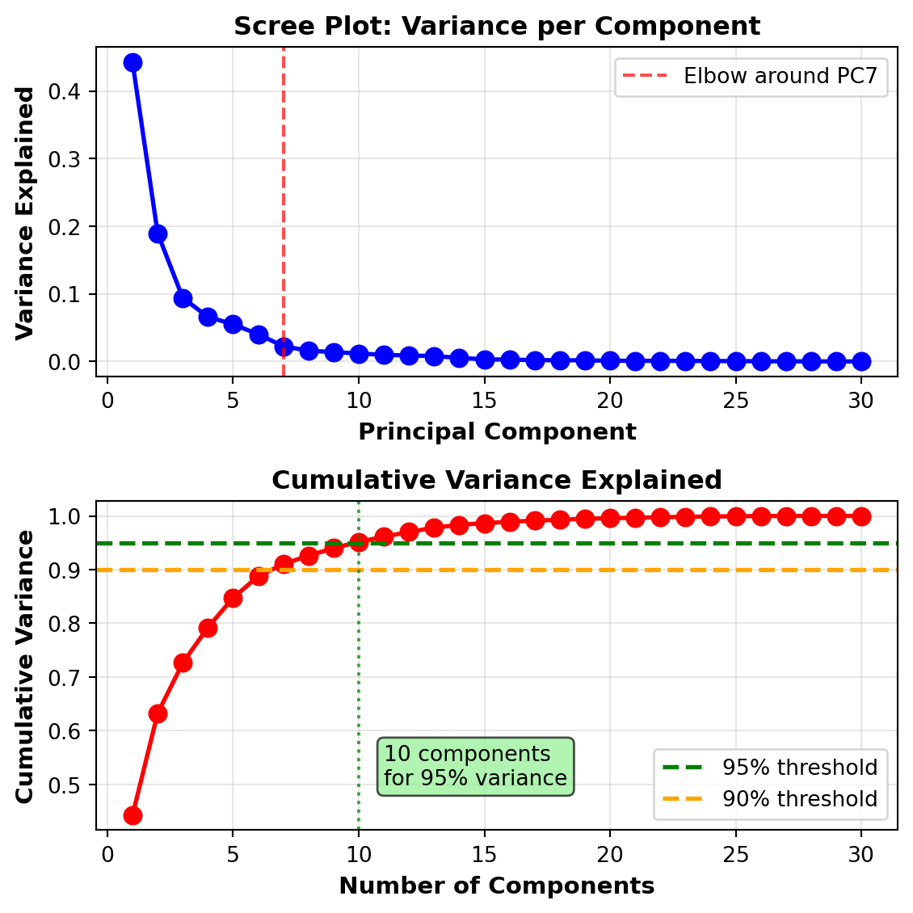

graph TB
A[Unsupervised Learning<br/>Discover patterns without labels] --> B[Clustering<br/>Group similar observations]
A --> C[Dimension Reduction<br/>Reduce number of features]
B --> B1[K-Means: Customer segmentation]
B --> B2[Hierarchical: Organize documents]
B --> B3[DBSCAN: Anomaly detection]
C --> C1[PCA: Compress features]
C --> C2[t-SNE: Visualize high-D data]
C --> C3[Autoencoders: Deep learning compression]
style A fill:#43464B,stroke:#fff,stroke-width:2px,color:#fff
style B fill:#4ECDC4,stroke:#fff,stroke-width:2px
style C fill:#FF6B6B,stroke:#fff,stroke-width:2px
Week 13 – Unsupervised Learning
Clustering and Dimension Reduction with PCA
Welcome to Week 13
Quick overview of today’s plan:
- Introduction to unsupervised learning concepts
- Clustering: Finding natural groups in data
- Dimension reduction: Simplifying complex datasets
- Hands-on demonstrations with real data
Discussion: Homework & Questions
Questions from Week 12?
- Decision trees and ensemble methods?
- Random forests and feature importance?
- Model evaluation, comparison?
- Hyperparameter tuning?
- Anything confusing in the quiz or class lab?
- Time to ask!
Activity
Converse with your neighbor and identify…
- 1 new thing you learned last week that you that you thought was well explained
- 1 thing we covered last week that is still confusing
What is Unsupervised Learning?
Supervised vs. Unsupervised Learning
Everything we’ve done so far has been supervised learning:
Supervised Learning
- You have a target variable (labels)
- Goal: Predict the outcome
- Examples:
- Predict house prices
- Classify loan defaults
- Diagnose diseases
- Success metric: Accuracy, RMSE, etc.
Unsupervised Learning
- No target variable (no labels)
- Goal: Discover hidden patterns
- Examples:
- Find customer segments
- Group similar documents
- Reduce feature complexity
- Success metric: Interpretability, business value
Think-Pair-Share
Let’s think about when you might need unsupervised learning in business contexts.
Discuss with your neighbor:
- Think of a business problem where you have lots of data but NO labels
- What would you want to discover about that data?
- How might finding patterns (without predicting) be valuable?
Example to get you started: A retailer has millions of transaction records but no predetermined customer segments…
Then we’ll take a few responses…
Two Main Types of Unsupervised Learning
Key Distinction
Clustering is focused on finding groupings amongst the rows (observations) — grouping similar customers, products, or data points together.
Dimension Reduction is focused on finding groupings amongst the columns (features) — combining correlated features into composite components.
Clustering: Groups ROWS (observations)

Key Takeaway
Clustering finds groupings amongst the ROWS — it identifies which observations (customers, products, patients) are similar to each other and groups them together.
“These customers behave similarly”
Dimension Reduction: Combines COLUMNS (features)

Key Takeaway
Dimension Reduction finds groupings amongst the COLUMNS — it identifies which features are correlated and combines them into composite components.
“These features capture similar information”
Clustering: Finding Natural Groups
What is Clustering?
Clustering automatically groups similar observations together without being told what the groups should be.
Real-world applications:
- Marketing: Segment customers by behavior
- Retail: Group products by purchase patterns
- Healthcare: Identify patient subtypes
- Fraud detection: Find unusual transaction patterns
- Document analysis: Organize similar articles
- Image compression: Group similar pixels
graph TD
A[1000 Customers<br/>Many features] --> B{Clustering<br/>Algorithm}
B --> C1[Segment 1:<br/>Budget Shoppers]
B --> C2[Segment 2:<br/>Premium Buyers]
B --> C3[Segment 3:<br/>Occasional Visitors]
style A fill:#f0f0f0
style B fill:#43464B,color:#fff
style C1 fill:#FF6B6B
style C2 fill:#4ECDC4
style C3 fill:#45B7D1
How K-Means Works: The Algorithm
K-Means is an iterative algorithm that finds clusters by repeatedly assigning points and updating centers:

Think-Pair-Share: Identify Clustering Problems
Which of these business problems would benefit from clustering?
Discuss with your neighbor:
- Problem A: You have customer purchase history and want to create targeted marketing campaigns
- Problem B: You want to predict which customers will churn next month
- Problem C: You have 10,000 products and want to organize them into logical groups
- Problem D: You want to predict house prices based on square footage and location
Which are clustering problems? Which are supervised learning? Why?
Then we’ll take a few responses…
Hands-On Demo: K-Means in Action
Let’s see K-Means clustering with a simple customer dataset:
| annual_spending | visits_per_year | |
|---|---|---|
| 0 | 2248.357077 | 5.194155 |
| 1 | 1930.867849 | 6.937290 |
| 2 | 2323.844269 | 3.595894 |
| 3 | 2761.514928 | 4.344676 |
| 4 | 1882.923313 | 4.215784 |
| ... | ... | ... |
| 85 | 8148.770069 | 39.135916 |
| 86 | 9140.781482 | 35.065009 |
| 87 | 8730.125777 | 42.267670 |
| 88 | 8129.167857 | 33.676716 |
| 89 | 8859.287203 | 48.600846 |
90 rows × 2 columns
Demo: Fitting K-Means

The Big Question: How Many Clusters (K)?
Problem: K-Means requires you to specify the number of clusters upfront. But how do you know what K should be?
Elbow Method
- Try different values of K (e.g., 2, 3, 4, 5, 6…)
- Measure “inertia” (within-cluster sum of squares)
- Plot inertia vs. K
- Look for the “elbow” where adding more clusters doesn’t help much
Lower inertia = tighter clusters = better fit
Silhouette Score
- Measures how similar each point is to its own cluster vs. other clusters
- Ranges from -1 (wrong cluster) to +1 (perfect cluster)
- Higher is better
- Typical good score: 0.5-0.7
Silhouette score balances cluster tightness with separation
Demo: Finding the Right K
from sklearn.metrics import silhouette_score
# Try K from 2 to 8
K_range = range(2, 9)
inertias = []
silhouettes = []
for k in K_range:
km = KMeans(n_clusters=k, random_state=42, n_init=10)
km.fit(customers_scaled)
inertias.append(km.inertia_)
silhouettes.append(silhouette_score(customers_scaled, km.labels_))
# Plot both metrics
fig, (ax1, ax2) = plt.subplots(2, 1, figsize=(6, 6))
# Elbow plot
ax1.plot(K_range, inertias, 'bo-', linewidth=2, markersize=8)
ax1.set_xlabel('Number of Clusters (K)', fontweight='bold')
ax1.set_ylabel('Inertia (Within-cluster SS)', fontweight='bold')
ax1.set_title('Elbow Method', fontweight='bold')
ax1.grid(True, alpha=0.3)
ax1.axvline(x=3, color='red', linestyle='--', alpha=0.5, label='Elbow at K=3')
ax1.legend()
# Silhouette plot
ax2.plot(K_range, silhouettes, 'ro-', linewidth=2, markersize=8)
ax2.set_xlabel('Number of Clusters (K)', fontweight='bold')
ax2.set_ylabel('Silhouette Score', fontweight='bold')
ax2.set_title('Silhouette Score by K', fontweight='bold')
ax2.grid(True, alpha=0.3)
ax2.axvline(x=3, color='red', linestyle='--', alpha=0.5, label='Peak at K=3')
ax2.legend()
plt.tight_layout()
plt.show()
Interactive Activity: Interpret Elbow Plots
Your Turn
Imagine you’re analyzing shopping behavior and get this elbow plot:
- K=2: Inertia = 10,000
- K=3: Inertia = 7,000
- K=4: Inertia = 5,200
- K=5: Inertia = 4,800
- K=6: Inertia = 4,600
Discuss with your neighbor:
- Where is the “elbow” in this data?
- What K would you recommend? Why?
- What if your marketing team says they can only handle 3 customer segments? Does that change your answer?
Then we’ll take a few responses…
Reality Check: Real Data is Messy
The examples so far have been clean and simple…
But real business data rarely has such clear clusters!
Let’s look at a real-world example: grocery store customer segmentation with:
- 801 actual households
- Transaction history over 1 year
- 14 features combining:
- Behavioral: spending, visit frequency, discount usage, recency
- Demographic: age, income, household size, marital status, homeownership
Coming Up
We’ll see that real data doesn’t give us clean, obvious answers. This is completely normal and expected in industry!
Real Data: Customer Features
Real customer data shape: (801, 14)
First few customers:| total_spending | avg_basket_value | num_trips | num_unique_products | avg_days_between_trips | recency_days | discount_rate | coupon_usage_rate | age_encoded | income_encoded | household_size_num | num_kids | is_married | is_homeowner | |
|---|---|---|---|---|---|---|---|---|---|---|---|---|---|---|
| 0 | 2415.56 | 2.459837 | 51 | 437 | 7.039216 | 0 | 0.176862 | 0.023001 | 6 | 4 | 2.0 | 0 | 1 | 1 |
| 1 | 1952.37 | 2.555458 | 32 | 556 | 10.750000 | 5 | 0.151821 | 0.007043 | 4 | 5 | 2.0 | 0 | 1 | 1 |
| 2 | 3080.81 | 2.808396 | 65 | 790 | 5.523077 | 3 | 0.198656 | 0.004658 | 2 | 3 | 3.0 | 1 | 0 | 0 |
| 3 | 7448.22 | 5.659742 | 157 | 656 | 2.305732 | 0 | 0.143786 | 0.023471 | 2 | 6 | 4.0 | 2 | 0 | 1 |
| 4 | 646.87 | 2.967294 | 49 | 129 | 7.387755 | 1 | 0.112758 | 0.000000 | 4 | 5 | 1.0 | 0 | 0 | 1 |
| 5 | 2291.09 | 4.457374 | 54 | 282 | 6.574074 | 9 | 0.254634 | 0.000655 | 6 | 1 | 2.0 | 0 | 0 | 1 |
| 6 | 4094.36 | 3.712022 | 100 | 467 | 3.610000 | 0 | 0.135643 | 0.008605 | 4 | 7 | 2.0 | 0 | 1 | 1 |
| 7 | 7739.37 | 2.479773 | 298 | 1363 | 1.204698 | 0 | 0.254389 | 0.001917 | 3 | 2 | 1.0 | 0 | 0 | 0 |
| 8 | 5525.98 | 3.728731 | 289 | 344 | 1.256055 | 1 | 0.105570 | 0.001276 | 2 | 6 | 2.0 | 0 | 1 | 0 |
| 9 | 3453.31 | 3.933155 | 79 | 443 | 4.544304 | 0 | 0.145976 | 0.014780 | 4 | 6 | 2.0 | 0 | 1 | 1 |
Real Data: Elbow & Silhouette Analysis
Let’s apply the same methods we used before:

Results for different K values:
K=2: Inertia= 9,663, Silhouette=0.173
K=3: Inertia= 8,618, Silhouette=0.150
K=4: Inertia= 7,898, Silhouette=0.140
K=5: Inertia= 7,425, Silhouette=0.144
K=6: Inertia= 6,991, Silhouette=0.146
K=7: Inertia= 6,616, Silhouette=0.140
K=8: Inertia= 6,338, Silhouette=0.135
K=9: Inertia= 6,106, Silhouette=0.127
K=10: Inertia= 5,911, Silhouette=0.125What Do You Notice?
Observations:
- No clear elbow! 📉
- WCSS decreases gradually
- No obvious “bend” like our simple examples
- Low silhouette scores 📊
- All scores around 0.14-0.17
- K=2 is highest, but barely
- Small differences between K values
This is COMPLETELY NORMAL!
Real customer data:
- Lives on a spectrum, not in neat boxes
- Has overlapping patterns (customers share behaviors)
- Shows fuzzy boundaries between segments
- Rarely has one “correct” K
Low silhouette scores (0.15-0.20) are expected and acceptable for behavioral data!
When Metrics Don’t Give Clear Answers
What should you do when there’s no obvious “winner”?
Statistical considerations:
- K=2 has highest silhouette (0.166)
- K=3-4 show similar performance
- K=5+ continue declining gradually
But statistics alone aren’t enough!
Business considerations:
- Can marketing handle 2 segments? 4? 6?
- What’s the ROI of personalization?
- Are segments actionable?
- Can you describe each segment clearly?
- Do stakeholders understand the segmentation?
Work with Stakeholders!
When metrics are ambiguous:
- Try multiple K values (e.g., K=3, 4, 5)
- Profile each segmentation - what do the clusters mean?
- Present options to business stakeholders
- Choose based on: interpretability + actionability + resource constraints
- Validate with domain experts (“Do these segments make sense?”)
Example: Choosing K for This Dataset
Let’s walk through the decision process:
| K | Pros | Cons | Decision |
|---|---|---|---|
| K=2 | Highest silhouette (0.166) Simple to explain |
Too coarse? Miss nuances Only “high” vs “low” spenders |
Maybe too simple |
| K=3 | Good silhouette (0.158) Aligns with classic RFM |
Still quite broad segments | Good choice |
| K=4 | Moderate silhouette (0.148) More granular insights |
Marketing can handle 4 segments | Good choice |
| K=5 | Lower silhouette (0.144) Very specific segments |
Complex for marketing Harder to operationalize |
Probably too many |
Real-World Choice
For this grocery retailer, K=4 might be ideal:
- Statistical performance is reasonable (silhouette = 0.148)
- Creates actionable segments (e.g., “budget shoppers,” “loyal regulars,” “premium buyers,” “infrequent visitors”)
- Marketing team can manage 4 distinct campaigns
- Provides meaningful differentiation without overwhelming complexity
Dimension Reduction with PCA
The Problem: Too Many Features
Modern datasets are getting wider and wider—hundreds or thousands of features:
Challenges of high dimensionality:
- Curse of dimensionality: Data becomes sparse in high-D space
- Computational cost: Training takes forever
- Overfitting risk: More features = more noise
- Multicollinearity: Correlated features confuse models
- Visualization: Can’t plot 100 dimensions!
Examples:
- Healthcare: 20,000+ genes measured per patient
- Computer vision: Images with millions of pixels
- E-commerce: 500+ features per customer
- Text analysis: Thousands of word counts per document
Question: Do we really need ALL these features?
Think-Pair-Share: When Are Features a Problem?
Let’s think about when having many features becomes problematic.
Discuss with your neighbor:
- You’re predicting house prices with 100 features (sq ft, bedrooms, bathrooms, neighborhood, school ratings, crime rates, etc.)
- Many features are correlated (e.g., sq ft correlates with bedrooms)
- Your model takes 30 minutes to train
- Test accuracy is worse than training accuracy
Questions:
- Which of the problems above suggest you have too many features?
- What might you gain by reducing from 100 to 10 features?
- What might you lose?
Then we’ll take a few responses…
What is Dimension Reduction?
Dimension reduction transforms your data from high-dimensional space to lower-dimensional space while preserving most of the important information.
graph LR
A["Original Data<br/>1000 observations<br/>50 features"] --> B{PCA<br/>Dimension Reduction}
B --> C["Transformed Data<br/>1000 observations<br/>10 components<br/><br/>Retains 90% of variance"]
style A fill:#f0f0f0
style B fill:#43464B,color:#fff
style C fill:#4ECDC4
Two main approaches:
- Feature Selection: Pick a subset of original features (e.g., select the 10 most important)
- Feature Extraction: Create NEW features by combining originals (e.g., PCA creates “principal components”)
Important
Today we focus on PCA (Principal Component Analysis) — the most widely-used feature extraction method.
Principal Component Analysis (PCA): Visual Overview
How PCA transforms many correlated features into fewer uncorrelated components:
graph TD
A[50 Original Features<br/>All correlated] --> B[PCA Transformation]
B --> PC1[PC1: 45% variance<br/>Overall Size]
B --> PC2[PC2: 20% variance<br/>Location Quality]
B --> PC3[PC3: 10% variance<br/>Age/Condition]
B --> PC4[PC4: 8% variance<br/>Luxury Features]
B --> PC5[PC5: 5% variance<br/>...]
B --> Rest[PC6-PC50: 12% variance<br/>Mostly noise]
style PC1 fill:#FF6B6B
style PC2 fill:#4ECDC4
style PC3 fill:#45B7D1
style Rest fill:#f0f0f0
PCA: The Intuition
PCA finds new coordinate axes (principal components) that capture maximum variance:
The idea:
- PC1 points in the direction where data varies the MOST
- PC2 points in the next-most variation direction (perpendicular to PC1)
- PC3 points in the next direction (perpendicular to both)
- And so on…
Key Insight
Often the first 5-10 components capture 90%+ of the total variation! This means you can reduce from 50 features to just 5-10 components while retaining most of the information.
Visualizing PCA in 3D: House Features
Let’s see how PCA works with 3 house features: square feet, bedrooms, and bathrooms.
Rotate the plot to see how PC1 aligns with the direction of maximum spread!
Variance explained by each component:
PC1: 92.5%
PC2: 5.6%
PC3: 2.0%
PC1 captures most variance because sq ft, bedrooms, and bathrooms are all correlated!The Apartment-Finding Analogy
Imagine tracking 10 apartment features: rent, sq ft, distance from downtown, bedrooms, building age, floor number, etc.
You might notice correlations:
- Larger apartments → more bedrooms, more bathrooms
- Newer buildings → farther from downtown, higher rent
- Higher floors → better views, cost more
PCA would identify underlying factors:
PC1: “Size & Space”
- Square footage: ✓
- Bedrooms: ✓
- Bathrooms: ✓
- Closet space: ✓
Captures 50% of variance
PC2: “Location & Age”
- Distance to downtown: ✓
- Building age: ✓
- Neighborhood rating: ✓
Captures 25% of variance
PC3: “Luxury & Amenities”
- Floor number: ✓
- Building finishes: ✓
- Gym/pool access: ✓
Captures 15% of variance
Result: Instead of tracking 10 correlated features, you have 3 uncorrelated components capturing 90% of information!
Step 1: The Original Data
Let’s apply PCA to a medical dataset with 569 patients and 30 features measuring tumor characteristics:
| radius_mean | texture_mean | perimeter_mean | area_mean | smoothness_mean | compactness_mean | concavity_mean | concave points_mean | symmetry_mean | fractal_dimension_mean | ... | radius_worst | texture_worst | perimeter_worst | area_worst | smoothness_worst | compactness_worst | concavity_worst | concave points_worst | symmetry_worst | fractal_dimension_worst | |
|---|---|---|---|---|---|---|---|---|---|---|---|---|---|---|---|---|---|---|---|---|---|
| 0 | 17.99 | 10.38 | 122.80 | 1001.0 | 0.11840 | 0.27760 | 0.30010 | 0.14710 | 0.2419 | 0.07871 | ... | 25.380 | 17.33 | 184.60 | 2019.0 | 0.16220 | 0.66560 | 0.7119 | 0.2654 | 0.4601 | 0.11890 |
| 1 | 20.57 | 17.77 | 132.90 | 1326.0 | 0.08474 | 0.07864 | 0.08690 | 0.07017 | 0.1812 | 0.05667 | ... | 24.990 | 23.41 | 158.80 | 1956.0 | 0.12380 | 0.18660 | 0.2416 | 0.1860 | 0.2750 | 0.08902 |
| 2 | 19.69 | 21.25 | 130.00 | 1203.0 | 0.10960 | 0.15990 | 0.19740 | 0.12790 | 0.2069 | 0.05999 | ... | 23.570 | 25.53 | 152.50 | 1709.0 | 0.14440 | 0.42450 | 0.4504 | 0.2430 | 0.3613 | 0.08758 |
| 3 | 11.42 | 20.38 | 77.58 | 386.1 | 0.14250 | 0.28390 | 0.24140 | 0.10520 | 0.2597 | 0.09744 | ... | 14.910 | 26.50 | 98.87 | 567.7 | 0.20980 | 0.86630 | 0.6869 | 0.2575 | 0.6638 | 0.17300 |
| 4 | 20.29 | 14.34 | 135.10 | 1297.0 | 0.10030 | 0.13280 | 0.19800 | 0.10430 | 0.1809 | 0.05883 | ... | 22.540 | 16.67 | 152.20 | 1575.0 | 0.13740 | 0.20500 | 0.4000 | 0.1625 | 0.2364 | 0.07678 |
| ... | ... | ... | ... | ... | ... | ... | ... | ... | ... | ... | ... | ... | ... | ... | ... | ... | ... | ... | ... | ... | ... |
| 564 | 21.56 | 22.39 | 142.00 | 1479.0 | 0.11100 | 0.11590 | 0.24390 | 0.13890 | 0.1726 | 0.05623 | ... | 25.450 | 26.40 | 166.10 | 2027.0 | 0.14100 | 0.21130 | 0.4107 | 0.2216 | 0.2060 | 0.07115 |
| 565 | 20.13 | 28.25 | 131.20 | 1261.0 | 0.09780 | 0.10340 | 0.14400 | 0.09791 | 0.1752 | 0.05533 | ... | 23.690 | 38.25 | 155.00 | 1731.0 | 0.11660 | 0.19220 | 0.3215 | 0.1628 | 0.2572 | 0.06637 |
| 566 | 16.60 | 28.08 | 108.30 | 858.1 | 0.08455 | 0.10230 | 0.09251 | 0.05302 | 0.1590 | 0.05648 | ... | 18.980 | 34.12 | 126.70 | 1124.0 | 0.11390 | 0.30940 | 0.3403 | 0.1418 | 0.2218 | 0.07820 |
| 567 | 20.60 | 29.33 | 140.10 | 1265.0 | 0.11780 | 0.27700 | 0.35140 | 0.15200 | 0.2397 | 0.07016 | ... | 25.740 | 39.42 | 184.60 | 1821.0 | 0.16500 | 0.86810 | 0.9387 | 0.2650 | 0.4087 | 0.12400 |
| 568 | 7.76 | 24.54 | 47.92 | 181.0 | 0.05263 | 0.04362 | 0.00000 | 0.00000 | 0.1587 | 0.05884 | ... | 9.456 | 30.37 | 59.16 | 268.6 | 0.08996 | 0.06444 | 0.0000 | 0.0000 | 0.2871 | 0.07039 |
569 rows × 30 columns
Step 2: Standardize and Apply PCA
# Step 1: Standardize (critical for PCA!)
scaler = StandardScaler()
X_scaled = scaler.fit_transform(X)
# Step 2: Fit PCA to create all 30 principal components
pca_full = PCA()
X_pca = pca_full.fit_transform(X_scaled)
print(f"\nOriginal data: {X.shape}")
print(f"PCA-transformed data: {X_pca.shape}")
print(f"\nFirst few patients in PC space:")
pd.DataFrame(X_pca[:5, :5],
columns=[f'PC{i+1}' for i in range(5)]).round(3)
Original data: (569, 30)
PCA-transformed data: (569, 30)
First few patients in PC space:| PC1 | PC2 | PC3 | PC4 | PC5 | |
|---|---|---|---|---|---|
| 0 | 9.193 | 1.949 | -1.123 | -3.634 | 1.195 |
| 1 | 2.388 | -3.768 | -0.529 | -1.118 | -0.622 |
| 2 | 5.734 | -1.075 | -0.552 | -0.912 | 0.177 |
| 3 | 7.123 | 10.276 | -3.233 | -0.153 | 2.961 |
| 4 | 3.935 | -1.948 | 1.390 | -2.941 | -0.547 |
Step 3: How Many Components Should We Keep?
# Create scree plot
fig, (ax1, ax2) = plt.subplots(2, 1, figsize=(6, 6))
# Individual variance explained
variance_explained = pca_full.explained_variance_ratio_
ax1.plot(range(1, len(variance_explained) + 1),
variance_explained, 'bo-', linewidth=2, markersize=8)
ax1.set_xlabel('Principal Component', fontweight='bold', fontsize=11)
ax1.set_ylabel('Variance Explained', fontweight='bold', fontsize=11)
ax1.set_title('Scree Plot: Variance per Component', fontweight='bold', fontsize=12)
ax1.grid(True, alpha=0.3)
ax1.axvline(x=7, color='red', linestyle='--', alpha=0.7, label='Elbow around PC7')
ax1.legend()
# Cumulative variance explained
cumsum = np.cumsum(variance_explained)
ax2.plot(range(1, len(cumsum) + 1), cumsum, 'ro-', linewidth=2, markersize=8)
ax2.axhline(y=0.95, color='green', linestyle='--', linewidth=2, label='95% threshold')
ax2.axhline(y=0.90, color='orange', linestyle='--', linewidth=2, label='90% threshold')
ax2.set_xlabel('Number of Components', fontweight='bold', fontsize=11)
ax2.set_ylabel('Cumulative Variance', fontweight='bold', fontsize=11)
ax2.set_title('Cumulative Variance Explained', fontweight='bold', fontsize=12)
ax2.legend()
ax2.grid(True, alpha=0.3)
# Find components needed for 95%
n_95 = np.argmax(cumsum >= 0.95) + 1
ax2.axvline(x=n_95, color='green', linestyle=':', alpha=0.7)
ax2.text(n_95 + 1, 0.5, f'{n_95} components\nfor 95% variance',
fontsize=10, bbox=dict(boxstyle='round', facecolor='lightgreen', alpha=0.7))
plt.tight_layout()
plt.show()
Interactive Activity: Reading Scree Plots
Your Turn
You’re analyzing customer behavior with 50 features. After running PCA, you get:
- PC1: 35% variance
- PC2: 20% variance
- PC3: 12% variance
- PC4: 8% variance
- PC5: 6% variance
- PC6-50: 19% variance (combined)
Discuss with your neighbor:
- How many components would you keep? Why?
- If you keep just PC1 and PC2, what percentage of information do you retain?
- What are you trading off when you reduce from 50 to 5 features?
Then we’ll take a few responses…
What Do Principal Components Mean?
Principal components are weighted combinations of original features.
Let’s look at what contributes to PC1 in our breast cancer data:
# Refit with more components to examine
pca_7 = PCA(n_components=7)
pca_7.fit(X_scaled)
# Look at loadings (weights) for PC1
pc1_loadings = pd.DataFrame({
'feature': X.columns,
'loading': pca_7.components_[0]
}).sort_values('loading', key=abs, ascending=False)
print("Top 10 features contributing to PC1:")
print(pc1_loadings.head(10).to_string(index=False))Top 10 features contributing to PC1:
feature loading
concave points_mean 0.260854
concavity_mean 0.258400
concave points_worst 0.250886
compactness_mean 0.239285
perimeter_worst 0.236640
concavity_worst 0.228768
radius_worst 0.227997
perimeter_mean 0.227537
area_worst 0.224871
area_mean 0.220995Interpretation: PC1 loads heavily on features related to tumor size, texture, and shape irregularity. It represents “overall tumor severity”—high PC1 means larger, more irregular tumors.
Demo: Visualizing High-Dimensional Data with PCA
One powerful use of PCA: reducing to 2D for visualization!
Reduced from 30 features to 2 components
Retained 63.2% of variance
PCA as Feature Engineering for Machine Learning
Another powerful use case: Use PCA-transformed features as input to ML models
Why use PCA before modeling?
- Reduces overfitting - Fewer features = simpler model = better generalization
- Speeds up training - Fewer features = faster computation
- Handles multicollinearity - PCs are uncorrelated by design
- Removes noise - Minor components often represent noise
Let’s compare model performance with and without PCA using our breast cancer data:
Model Comparison: Original vs. PCA Features
from sklearn.model_selection import train_test_split
from sklearn.linear_model import LogisticRegression
from sklearn.metrics import accuracy_score, precision_score, recall_score, f1_score
# Split into train/test
X_train, X_test, y_train, y_test = train_test_split(
X, y, test_size=0.3, random_state=42, stratify=y
)
# Standardize the features (critical!)
scaler = StandardScaler()
X_train_scaled = scaler.fit_transform(X_train)
X_test_scaled = scaler.transform(X_test)
print(f"Original training data shape: {X_train_scaled.shape}")Original training data shape: (398, 30)# Model 1: All 30 original features
model_original = LogisticRegression(max_iter=5000, random_state=42)
model_original.fit(X_train_scaled, y_train)
y_pred_original = model_original.predict(X_test_scaled)
# Model 2: 7 PCA components (from earlier analysis)
pca_7 = PCA(n_components=7)
X_train_pca = pca_7.fit_transform(X_train_scaled)
X_test_pca = pca_7.transform(X_test_scaled)
model_pca = LogisticRegression(max_iter=5000, random_state=42)
model_pca.fit(X_train_pca, y_train)
y_pred_pca = model_pca.predict(X_test_pca)
# Calculate all metrics for both models
metrics_original = {
'Accuracy': accuracy_score(y_test, y_pred_original),
'Precision': precision_score(y_test, y_pred_original),
'Recall': recall_score(y_test, y_pred_original),
'F1-Score': f1_score(y_test, y_pred_original)
}
metrics_pca = {
'Accuracy': accuracy_score(y_test, y_pred_pca),
'Precision': precision_score(y_test, y_pred_pca),
'Recall': recall_score(y_test, y_pred_pca),
'F1-Score': f1_score(y_test, y_pred_pca)
}
# Display comparison table
print(f"\n{'Model':<25} {'Features':<10} {'Accuracy':<10} {'Precision':<11} {'Recall':<10} {'F1-Score':<10}")
print(f"{'-'*85}")
print(f"{'Original Features':<25} {30:<10} {metrics_original['Accuracy']:<10.3f} {metrics_original['Precision']:<11.3f} {metrics_original['Recall']:<10.3f} {metrics_original['F1-Score']:<10.3f}")
print(f"{'PCA (7 components)':<25} {7:<10} {metrics_pca['Accuracy']:<10.3f} {metrics_pca['Precision']:<11.3f} {metrics_pca['Recall']:<10.3f} {metrics_pca['F1-Score']:<10.3f}")
print(f"\nReduced features by {(1 - 7/30)*100:.0f}% with minimal performance loss across all metrics!")
Model Features Accuracy Precision Recall F1-Score
-------------------------------------------------------------------------------------
Original Features 30 0.971 0.984 0.938 0.960
PCA (7 components) 7 0.982 0.984 0.969 0.976
Reduced features by 77% with minimal performance loss across all metrics!Why Accept Slightly Lower Accuracy?
Even if PCA features have slightly lower accuracy, the tradeoffs are often worth it:
Benefits of Using PCA:
- Faster training & prediction
- 7 features vs. 30 = ~4× speedup
- Matters for large datasets or complex models
- Reduced overfitting risk
- Simpler model = less prone to memorizing noise
- Better generalization to new data
- Eliminates multicollinearity
- PCs are uncorrelated by design
- Helps algorithms that assume independence
More Benefits:
- Easier deployment
- Smaller models are faster to deploy
- Require less memory in production
- Noise filtering
- Discarding minor components removes noise
- Can actually improve performance!
- Scalability
- With 100s-1000s of features, PCA becomes essential
- Our 77% reduction would be even more dramatic
The Key Tradeoff
PCA trades a small amount of accuracy for significant gains in speed, simplicity, and robustness. As datasets grow larger and wider, this tradeoff becomes increasingly favorable.
Using Clustering/PCA in ML Pipelines
Unsupervised methods often feed into supervised models:
graph LR
A[Raw Data<br/>100 features] --> B[StandardScaler<br/>Standardize]
B --> C{PCA<br/>Reduce to 20 components}
C --> D[K-Means<br/>Create 5 clusters]
D --> E[Add cluster labels<br/>as new feature]
E --> F[Supervised Model<br/>Random Forest<br/>Predict churn]
style A fill:#f0f0f0
style B fill:#FFE5B4
style C fill:#FF6B6B
style D fill:#4ECDC4
style E fill:#45B7D1
style F fill:#95E1D3
Example workflow:
- Reduce 100 features to 20 components with PCA (noise reduction)
- Cluster customers into 5 segments using K-Means on those 20 components
- Add cluster ID as a categorical feature
- Train a Random Forest to predict customer churn using PCA components + cluster ID
Benefit: Unsupervised learning creates better features for supervised learning!
Key Takeaways & Next Steps
Key Takeaways
Unsupervised learning discovers patterns without labels – Use it when you want to explore data structure rather than predict outcomes
Clustering groups similar observations – K-Means is the workhorse for customer segmentation, but choosing K requires judgment (elbow method, silhouette scores, business constraints)
PCA reduces dimensionality by creating uncorrelated components – Compress 100 features to 10 components while retaining 90%+ of information. Use scree plots to choose how many components to keep.
ALWAYS standardize features first – Both K-Means and PCA are highly sensitive to feature scale. Forget this and your results will be dominated by large-scale features!
Unsupervised → Supervised pipeline – Often you’ll use clustering/PCA as preprocessing steps to create better features for supervised learning models
When to Use Which Method
graph TD
Start[I have unlabeled data] --> Q1{What's my goal?}
Q1 -->|Find groups<br/>in my data| C[Use Clustering]
Q1 -->|Reduce number<br/>of features| D[Use Dimension Reduction]
Q1 -->|Both!| Both[Use Both:<br/>PCA then Clustering]
C --> C1[K-Means:<br/>Customer segments<br/>Product groups<br/>Market segments]
D --> D1[PCA:<br/>Feature compression<br/>Visualization<br/>Noise reduction]
Both --> B1[Common workflow:<br/>1. PCA to reduce features<br/>2. K-Means on components<br/>3. Use for supervised learning]
style Start fill:#f0f0f0
style Q1 fill:#43464B,color:#fff
style C fill:#4ECDC4
style D fill:#FF6B6B
style Both fill:#45B7D1
Connection to Thursday’s Lab
This Week’s Lab Preview
In Thursday’s lab, you’ll get hands-on practice with:
- Applying K-Means clustering to customer segmentation problems with real transaction data
- Implementing PCA to reduce high-dimensional data (like the Ames housing dataset)
- Combining both as a feature engineering step for a predictive model!
Come prepared to apply today’s concepts! Bring questions about clustering vs. dimension reduction use cases.
Looking Ahead
Btwn now & Thursday: Complete reading Chapters 28-30
Thursday Lab: Hands-on unsupervised learning exercises
Moving Foward: Course wrap-up & Final Project
Important
Start reviewing the final project details!
Any Final Questions?
- About clustering and K-Means?
- About PCA and dimension reduction?
- About when to use which method?
- About Thursday’s lab?
- About the final project?
BANA 4080